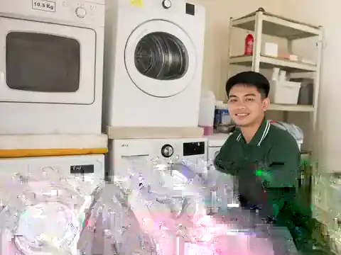
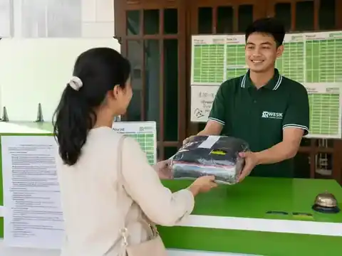

Laundry Kiloan
Cuci + setrika, cuci lipat, dan setrika saja dengan pilihan 3 hari, 1 hari, 6 jam, atau 3 jam.
Lihat harga kiloan →Titip cucian lebih tenang dengan proses yang tertata, satu mesin satu customer, pilihan layanan lengkap, dan tim yang mudah dihubungi.
Rwesik melayani cucian harian sampai item yang membutuhkan penanganan per pcs.
Cuci + setrika, cuci lipat, dan setrika saja dengan pilihan 3 hari, 1 hari, 6 jam, atau 3 jam.
Lihat harga kiloan →Bed cover, sprei, selimut, bantal, guling, tas, koper, boneka, pakaian satuan, gorden, helm dan lainnya.
Daftar lengkap →Fast Clean, Deep Clean, Leather/Suede, Rewhitening dan Unyellowing.
Detail shoe care →Karpet tipis, masjid, permadani sampai shaggy mulai Rp15.000/m².
Lihat harga →Untuk jas, kebaya, jaket dan item tertentu sesuai kebutuhan material.
Lihat harga →Delivery kiloan minimal 5 kg. Gratis sampai 5 km; di atas 5 km tambahan sekitar Rp10.000–Rp15.000.
Pesan pickup →Non Delivery minimal 3 kg. Delivery minimal 5 kg. Harga per kg sama, perbedaannya pada minimal order.



Untuk laundry kiloan delivery minimal 5 kg. Lokasi di atas 5 km dikenakan tambahan sekitar Rp10.000–Rp15.000 sesuai jarak.
“Laundry yang rekomen untuk para pendatang yang nyari laundry express di Pati, harganya ramah dikantong dan bener-bener tepat waktu, dan gokilnya bisa antar jemput ke hotel.”
Andika Bayu“Udah sering dikecewain laundry di Pati, ini nemu laundry yang pelayanannya bagus banget di Pati. Terimakasih Rwesik Laundry Pati.”
Lek Prie_29“Hasilnya memuaskan, bersih merata + wangi juga. Pokoknya bagus.”
KapitTidak. Rwesik menerapkan satu mesin satu customer.
Ada. Ketentuan lengkap dapat dilihat di halaman Garansi.
Untuk laundry kiloan delivery minimal 5 kg.
Ada pilihan 1 hari, express 6 jam dan super express 3 jam.